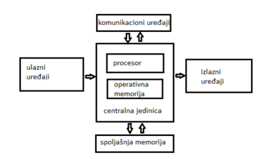
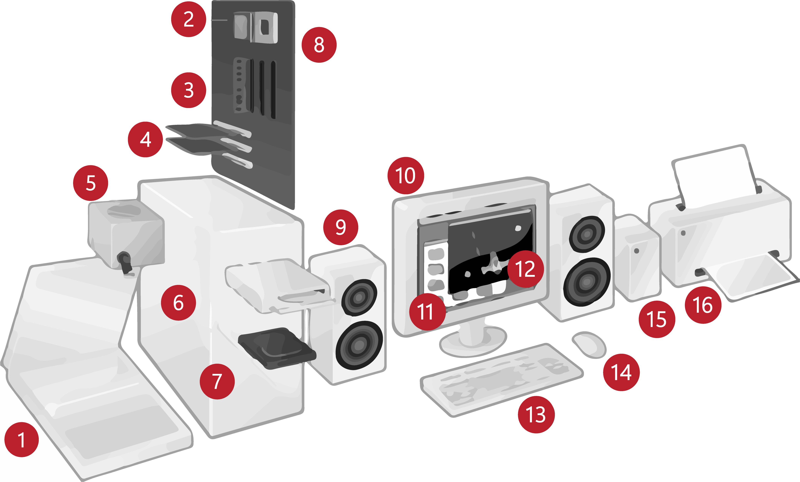
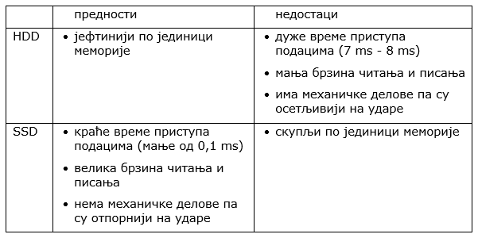
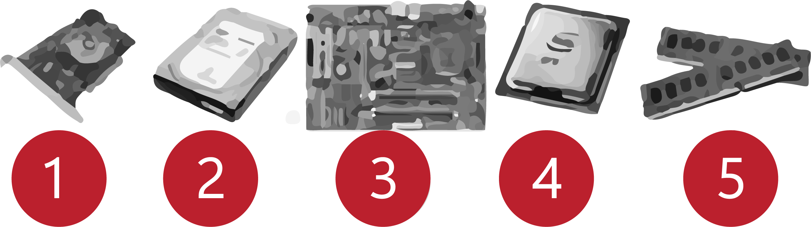
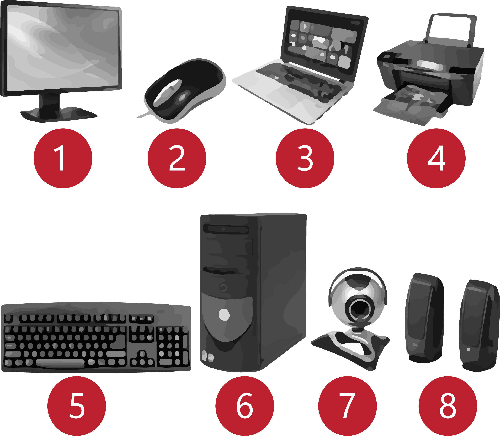

Хардвер¶
Реч „хардвер” ти је сигурно позната. Хардвер је физички део рачунара. То су сва она електронска кола, чипови, каблови, кућишта, екрани и тастатуре… Када смо говорили о развоју ИКТ-а поменули смо Фон Нојманов концепт рачунара. Можеш ли да се сетиш како изгледа? Нацртаћемо га опет, али мало измењеног, са још неким елементима:
Слика: слику урадити поново ћирилично
У литератури и на интернету ћеш наићи на различите шеме. Потражи их и упореди!
Да ли уочаваш нешто заједничко за све те шеме? У чему је разлика?
Можемо да кажемо да су основне компоненте хардвера (скоро) сваког рачунара:
централна јединица,
улазне јединице,
излазне јединице,
спољашње меморије и
комуникациони уређаји.
То су делови неопходни за рад дигиталног уређаја. Неки од њих су смештени у кутији - кућишту (процесор, радна меморија, меморија за чување података, матична плоча, графичка и звучна картица), док су други видљиви (монитор, миш, тастатура, звучници). Постоји и велики број додатних уређаја (скенер, штампач, волан, џојстик).
снимити видео попут овога https://youtu.be/4eNTlwnnhss rastaviti jedan desktop i pokazati sve bitne hardverske delove
Један целокупан рачунарски систем може да изгледа овако:
Слика: 1-скенер, 2- процесор, 3- радна меморија, 4- картице за проширење, 5- напајање, 6 – оптички диск, 7 – тврди диск, 8 – матична плоча, 9 – звучник, 10 – монитор, 11 – системски програм, 12 –кориснички програм, 13 – тастатура, 14 – миш, 15 – спољни тврди диск, 16 - штампач. Најважнији делови дигиталних уређаја смештени у кућиште. Кућиште је кутија направљена од челика или алуминијума, чија је улога да штити садржај од прашине и температуре, као и од случајног контакта са течношћу.
Централна јединица¶
Централна јединица „десктоп” рачунара састоји се од кућишта у којем се налазе:
матична плоча (system board, motherboard),
контролери,
портови,
дискете и дискови,
графичка картица и
извор напајања.
Слика: ovde slika matične ploče sa označenim važnim delovima
Матична плоча је основна компонента сваког рачунара. Централну улогу на њој (и у рачунару уопште) има процесор.
Процесор је уређај у којем се извршавају наредбе корисника и обрађују подаци, прецизиније, у њему се извршавају рачунске и логичке операције, као и инструкције које су задате програмом.
У свакодневном говору често се процесор назива CPU (енгл. central processing unit). Основне карактеристике сваког процесора су његова брзина и радни такт. Брзина представља број задатка (операција) које процесор може да обради у једној секунди и изражава се у милионима операција – мипсовима (енгл. MIPS, Million Instruction Per Second) или мфлопсовима (енгл. MFLOPS, Million Floating Point Per Second). Радни такт је „ритам” по коме ради процесор и изражава се у херцима (Hz). У данашњим дигиталним уређајима радни такт процесора изражава се у GHz. Тако да је: 1GHz = 1.000.000.000 операција у секунди.
Операције у процесору извршавају се тако што у процесору специјално електронско коло, сат (енгл. clock) генерише електричне импулсе који пролазе кроз електронска кола. Учесталост ових импулса је „ритам” по коме ради процесор и назива се радни такт, а изражава се у херцима (Hz). У данашњим дигиталним уређајима радни такт процесора изражава се у GHz, при чему 1GHz = 1.000.000.000 операција у секунди.
Дужина процесорске речи је број битова који се једновремено преноси и обрађује унутар процесора.
Карактеристике процесора су:
брзина процесора,
дужина процесорске речи,
радни такт и
интерни кеш.
На основној плочи се налазе конектори за прикључивање процесора. Процесор се при раду доста загрева па се на њега монтира додатни вентилатор („кулер”, енгл. cooler) који га хлади.
Још једна компонента која битно одређује могућности конкретног рачунара је унутрашња меморија или радна меморија - она се налази такође на матичној плочи.
Постоји три типа унутрашње меморије:
кеш,
РОМ
РАМ.
Капацитет меморије изражава се бројем бајтова, углавном килобајтима и мегабајтима.
Кеш меморија је врло брза меморија која се налази у самом процесору и у њој држе подаци који се често користе тако да им процесор приступа много брже него да су у некој другој меморији.
РОМ (енгл. ROM, Read Only Memory) је статички део меморије који може само да се чита. Њен садржај се не губи по искључењу рачунара. Користи се за складиштење програма и података који су често потребни, на пример, за инструкције за покретање рачунара при укључивању.
РАМ (енгл. RAM, Random Access Memory) је највећи део меморије и у њу се током рада рачунара врши и уписивање и читање. У РАМ су смештени програм и подаци са којима рачунар ради. По искључењу рачунара садржај ове меморије се брише. РАМ меморија није саставни део основне плоче, него се на основној плочи налазе конектори (слотови) на које се она прикључује.
Још једна врста РАМ меморије је привремена меморија, „бафер”, где подаци „чекају” на обраду или, на пример, ако штампач на може довољно брзо да одштампа податке, они се шаљу у бафер, где чекају у реду за штампу.
Радна меморија је уређај који чува податке и програме са којима процесор ради. Она омогућује процесору да брзо приступа потребним подацима и програмима. Када се рачунар искључи, процесор престаје са радом, а из радне меморије све се брише.
На матичној плочи постоји сет чипова који чине контролну јединицу. Она управља целокупним радом рачунара, одређује која је наредба следећа на реду за извршавање, узима је из меморије, интерпретира, и издаје одговарајуће наредбе процесору и контролише њихово извршење.
Информације међу компонентама размењују се путем магистрале, а према намени могу бити:
магистрала података (енгл.data bus) – комуникација између процесора и меморијских локација,
адресна магистрала (енгл.address bus) – преноси адресе на које се уписују или са којих се читају подаци који се обрађују,
контролна магистрала (енгл.control bus) – преноси управљачке и контролне сигнале на релацији процесор - компоненте и обрнуто.
Додатни уређаји прикључују се путем слотова. Преко њих се прикључују картице - контролери различитих јединица или саме јединице.
Периферни уређаји који имају стандардизоване прикључке повезују се са рачунаром путем портова. Раније је стандардно постојао велики број различитих врста портова, за тастатуру, миша, штампаче, палице за игру итд. Последњих пар година рачунари углавном имају портове у-ес-бе (енгл. USB, универзални серијски порт за разноврсне уређаје), ха-де-ем-и (енгл. HDMI) за монитор или пројектор, мрежни прикључак ар-џej 45 (engl. РЈ-45) и порт за слушалице и микрофон (енгл. 3.5mm jack).
Слика: слика и називи портова - стари и нови
Графичка картица је уређај који служи за приказивање слике на екрану дигиталних уређаја. У новијим рачунарима често се уграђује графичка картица која поседује свој процесор. За такве графичке картице се користи енглеска скраћеница GPU (енгл. graphic processing unit), и своју радну меморију.
Погледај још једном прву лекцију ове теме, део о представљању слике у рачунару и растерској графици, то ће ти помоћи да разумеш шта графичка картица заправо ради. Да се при генерисању слике не би додатно заузимала меморија рачунара, графичка картица има сопствену меморију. Што је већа резолуција екрана (број пиксела) и број боја које се користе, потребно је више ове „графичке„ меморије да би се слика довољно брзо генерисала.
Звучна картица је уређај који служи да дигиталне податке претвори у аналогне (континуалне) сигнале који се у звучницима трансформишу у звук.
Све компоненте у рачунару раде на једносмерну струју од 5,5V и 12V. Да ли знаш каква је струја која долази до рачунара из зидне утичнице?
Ако је твој одговор није био: „Наизменична струја, 220V„, преслишај се лекција физике из основне школе у вези са електричном струјом, или поразговарај са старијим укућанима. Јако је важно да разликујеш појмове везане за врсту струје и напон, због своје безбедности и због одржавања исправности уређаја које користиш.
Наизменична струја се трансформише у једносмерну одговарајуће јачине у јединици која се зове извор напајања. Ова јединица треба да има довољан број прикључака и снагу за снабдевање свих компоненти унутар рачунара.
Ра резимирамо, матична плоча је основа дигиталног уређаја. Све компоненте: графичка и звучна картица, хард диск, процесораи РАМ меморија се прикључују на њу чиме су они повезани у складну целину. На матичној плочи неки елементи омогућују прикључење осталих елемената и то су разни конектори, портови, слотови и џампери, итд.
Вратимо се шеми са почетка лекције. Централној јединици са шеме одговарају управо описане функционалности процесора, унутрашње меморије и контролне јединице. Стрелицама на шеми одговарају магистрале, слотови и портови.
Улазне јединице¶
Улазне јединице (улазни уређаји) омогућују унос података из „спољашњег света” у рачунар (тастатура, миш, микрофон, камера, фотоапарат, тачпед, џојстик, графичка табла, скенер, разни сензори итд.).
Тастатура је основни уређај за уношење података у рачунар. Тастери су груписани по својој функцији: алфанумерички, нумерички, тастери за померање курсора, функционални и контролни тастери (Esc, Ctrl, Shift, Tab). Неке тастатуре имају и специфичне тастере карактеристичне за конкретан оперативни систем. Зависно од модела тастатуре имају од 80 па до преко 100 тастера. Детаљније ћемо се бавити тастатуром у теми посвећеној обради текста.
Миш је уређај чије кретање по подлози прати показивач на екрану, а тастерима миша задају се команде. Са доње стране се налази сензор за детектовање померања по подлози, а са горње стране се налазе командни тастери.
Улазне величине као што су звук, слика, покрет, температура, уносе се помоћу микрофона, камере, скенера и разних сензора. Ове физичке величине се конвертују у податке који се даље обрађују и складиште у рачунару.
Излазне јединице¶
Излазне јединице (излазни уређаји) служе да се подаци из рачунара прикажу у облику разумљивом човеку. То су данас монитори, штампачи, 3-де штампачи, звучници, плотери, „наочаре” за виртуелну реалност.
Без обзира да ли говоримо о монитору као самосталном уређају или екрану као делу неког уређаја - лапотпа, таблета, телефона, то је компонента која приказује слику.
Можда сте негде видели старији тип монитора, који попут старих телевизора приказују слику путем катодне цеви (енгл. CRT, Catode Ray Tube), али они се због тога што су гломазни и емитују штетно зрачење повлаче из употребе. Сада су у употреби такoзвани „равни” или „танки” монитори. Израђују се у три различите технологије: LCD (Liquid Crystal Display), монитори се течним кристалом LED (Light Emitting Diode) и GPD (Gas Plasma Display). Слика на мониторима се састоји из тачака, пиксела, чија боја зависи од интензитета три светлосне компоненте: црвене, зелене и плаве. (Погледај поново део лекције у којем смо говорили о начину представљања слике у рачунару). Резолуција екрана обично се изражава у броју тачака (пиксела) по ширини и дужини, на пример 800х600, 1024х768, 1920х1080 и сл. Ако приђеш довољно близу монитору, ове тачке (нарочито код јако великих екрана) можеш видети и голим оком или уз помоћ лупе. Осим резолуције важне карактеристике монитора су и његова величина и број боја које може да прикаже. Она се означава дужином дијагонале (опет најчешће израженој у инчима 14’’, 17’’, 19’’, 21’’, 27’’, 34’’.. ) као и размером, односно односом ширине и дужине екрана на на пример 4:3, 16:9 итд.
Штампачи, првенствено намењени за приказ излазних података на папиру, мада постоје и штампачи који се могу користити за штампу на текстилу, керамици, па чак и у прехрамбене сврхе. Израђују се у некој од три технологије: матрични, ласерски и штампачи са млазницама (инк-џет).
За коришћење штампача важно је да знаш у којој технологији ради јер од тога зависи и врста папира коју смеш да користиш, као и начин замене тонера (мастила којим штампач оставља траг на папиру).
Матрични штампачи имају главу састављену од игала које ударају у папир преко траке натопљене мастилом и тако остављају траг. Овакви штампачи углавном штампају само једном бојом.
Слика: slika matrice
Ласерски штампачи раде слично фотокопир-машинама, имају тонер у праху који се захваљујући статичком електрицитету „лепи” за папир, па се онда врелим ваљком учврсти. Овако штампачи се израђују у две варијанте: они који штампају само црном бојом и они који штампају у боји. Папир који се користи у оваквим штампачима мора да буде термостабилан - да може да подноси високу температуру ваљка иначе ће се залепити за њега и штампач ће морати на поправку. Ако из неког разлога ваљак који учвршћује боју не ради, и из штампача изађе папир са прахом који отпада или је касета са тонером неисправна па се прах просипа, немојте га дирати руком или случајно удахнути јер је штетан по здравље. Ласерске штампаче карактерише добар квалитет слике и велика брзина штампања.
Слика: слика механизма са ваљцима
Штампачи са млазницама (инк-џет штампачи) имају течно мастило и штампају тако што главе за штампање распрскавају ситне капљице мастила. Ови штампачи се најчешће праве за штампу у боји. Ови штампачи су нешто спорији али дају квалитетне слике и знатно су јефтинији од ласерских штампача у боји.
Слика: слика механизма инкџет
3-де штампач (енгл. 3D printer) је излазни уређај који формира тродимензионалне објекте тако што глава топи пластику и истискује је пратећи програмске инструкције тако да формира тродимензионални објекат. Постоје и варијанте већих размера које се користе у грађевинарству - уместо пластике истискују цементну смешу и тиме граде зидове грађевина.
Слика: слика 3д штампач
Улазно-излазне јединице¶
Екран осетљив на додир, какав се користи за „паметне” телефоне, таблете и неке рачунаре, је истовремено и улазни и излазни уређај. Израђују се у различитим технологијама, а рад са њима заснива се на томе да могу да детектују додир и изврше радњу налик ситуацији када се на рачунару постави курсор миша на одређено место и кликне на тастер.
Спољашње меморије¶
Већ смо описали унутрашњу меморију рачунара и нагласили да она чува податке само док је под напоном. Када се рачунар искључи њен садржај се брише. Да би рачунар морао да ради потребно је да се подаци чувају на неком трајном медијум, који памти податке и кад се искључи рачунар и таква меморија се зове „спољашња меморија”.
Иако се у пракси користи израз хард диск (чврсти диск, тврди диск) постоје два типа основне спољне меорије: хард диск (енгл. HDD, Hard Disc Drive) и полупроводнички „диск” (енгл. SSD, Solid State Drive). HDD се састоји од магнетних дискова који се окрећу и главе која врши упис и читање, дакле има механичке делове. SSD нема механичке делове (дакле, нема „диск”), већ се састоји од полупроводничких интегрисаних кола. Раније су се користили искључиво HDD, а последњих неколико година сер све масовније користе SSD.
Због наведених карактеристика, SSD се обично користи за системски диск, а HDD за складиштење велике количине података.
Хард диск се може сместити у кућиште које се каблом повезује са рачунаром и у том случају, назива се екстерни хард диск.
Спољашња меморија је и флеш-меморија. Често се каже и у-ес-бе флеш меморија, енгл. USB flash, због назива порта путем којег се прикључује на рачунар.
Све ређе се користи, али на старијим рачунарима се може видети и оптички медијум компакт-диск (енгл. CD). До пре неколико година су се користили и магнетни медијуми - дискете од којих је данас остао само симбол - изглед иконице за снимање датотека.
Комуникационе јединице¶
Периферни уређаји у рачунару који служе за повезивање рачунара у мрежу и комуникацију са другим рачунаром су мрежна картица (за „жичану” мрежу), бежична мрежна карта (вајфај, енгл. WiFi), блутут (енгл. Bluetooth), 3g/4g модем (за конекцију са мрежом мобилне телефоније).

{kind=link}
{kind=link}
{kind=link}
{kind=link}
Врати се сада на лекцију Рачунарске мреже и интернет и у њој прочитај поново део Прикључење на интернет. Који се појмови појављују и тамо и у претходном пасусу? У ком својству се спомињу у свакој од ове две лекције? Покушај да објасниш везу између ова два аспекта и да је представиш цртежом.
На слици су бројевима од 1 до 5 означени делови дигиталних уређаја. На основу ње реши слагалицу која следи.
{kind=link}
-
Q-35: Споји одговарајуће појмове са бројевима од 1 до 5.
Tвој одговор није тачан. Покушај поново!
- Графичка картица
- 1
- Хард диск
- 2
- Матична плоча
- 3
- Процесор
- 4
- РАМ
- 5
На слици су бројевима од 1 до 8 означени делови рачунарског система. На основу ње реши слагалицу која следи.
{kind=link}
-
Q-36: Споји одговарајуће појмове са бројевима од 1 до 8.
Tвој одговор није тачан. Покушај поново!
- Монитор
- 1
- Миш
- 2
- Лаптоп рачунар
- 3
- Штампач
- 4
- Тастатура
- 5
- Кућиште
- 6
- Веб-камера
- 7
- Звучници
- 8
за вежбање прилагодити питања из мог квизлета https://quizlet.com/_5fii97 за сваки појам дугме које кад се отвори прикаже слику и опис